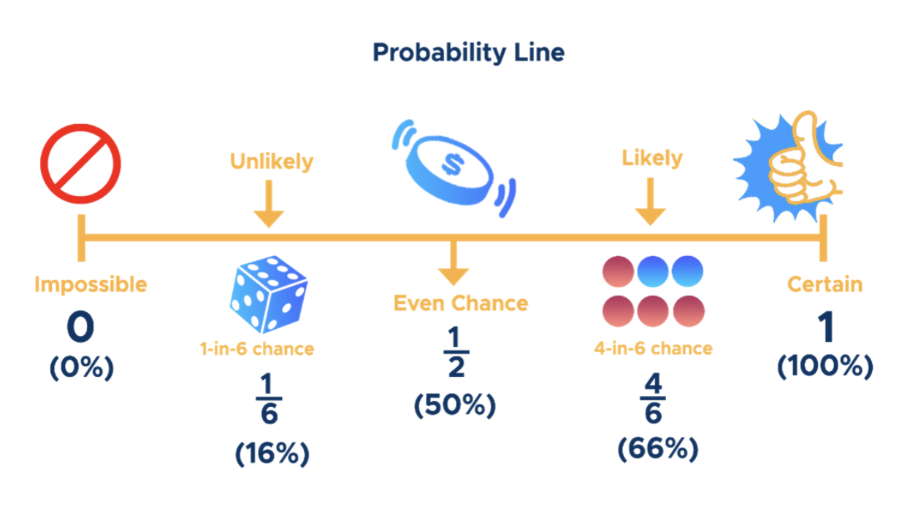
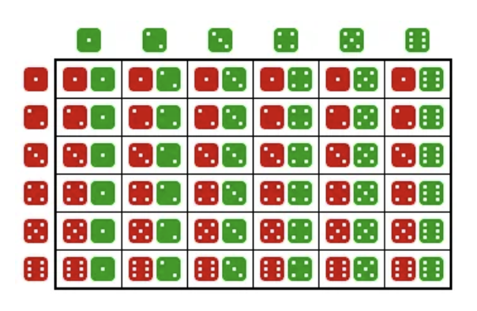
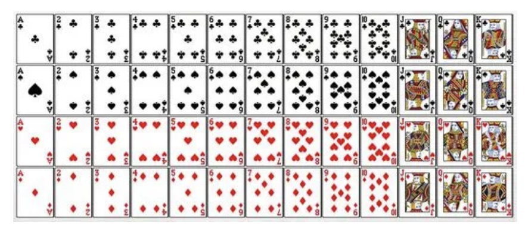
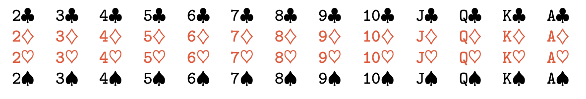
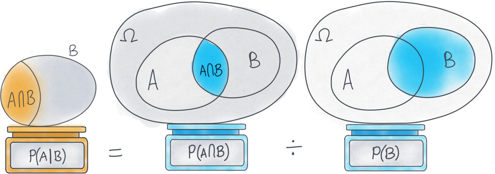

import matplotlib.pyplot as plt
import matplotlib.patches as patches
# Create a blank canvas with a rectangle representing the sample space
fig, ax = plt.subplots(figsize=(6, 4))
rect = patches.Rectangle(
(0.1, 0.1), 0.8, 0.8,
linewidth=3, edgecolor='black', facecolor='none'
)
ax.add_patch(rect)
# Label the sample space inside the rectangle
ax.text(0.5, 0.88, r'$\Omega$', fontsize=24, fontweight='bold', ha='center', va='top')
ax.text(0.5, 0.5, 'All possible outcomes', fontsize=14, ha='center')
# Clean up axes
ax.set_xticks([])
ax.set_yticks([])
ax.set_xlim(0, 1)
ax.set_ylim(0, 1)
ax.axis('off')
plt.title('Sample Space (Ω)', fontsize=16, pad=20)
plt.show()PSTAT 5A: Introduction to Probability
Lecture 4
Welcome to Lecture 4
Introduction to Probability
Understanding uncertainty through statistics
Today’s Learning Objectives
By the end of this lecture, you will be able to:
- Define probability and understand its basic properties
- Identify sample spaces and events
- Apply fundamental probability rules
- Calculate conditional probabilities
- Determine when events are independent
- Use Bayes’ theorem in simple applications
What is Probability?
🎯 Definition
Probability is a measure of the likelihood that an event will occur
Probability Range
Ranges from 0 to 1 (or 0% to 100%)
0: Event will never occur (impossible)
1: Event will certainly occur (certain)
0.5: Event has equal chance of occurring or not

Three Ways to Express Probability
- Fraction: \(\frac{1}{2}\), \(\frac{3}{4}\), \(\frac{2}{6}\)
- Decimal: 0.5, 0.75, 0.33
- Percentage: 50%, 75%, 33%
Example
When we roll a die, there are six possible outcomes:
1, 2, 3, 4, 5, 6.
The probability of any of them turning up is 1/6 or 16%.
Why Study Probability?
Probability helps us:
- Make decisions under uncertainty
- Understand random processes
- Analyze data and draw conclusions
- Model real-world phenomena
- Assess risk and likelihood
Applications: Weather forecasting, medical diagnosis, finance, quality control, gaming, insurance
Random Experiments
A random experiment is a process that:
- Can be repeated under similar conditions
- Has multiple possible outcomes
- The outcome cannot be predicted with certainty
Examples
🪙 Flipping a coin
🎲 Rolling a die
🃏 Drawing a card from a deck
💡 Measuring the lifetime of a light bulb
Sample Space
🎯 Definition The sample space (denoted \(S\) or \(\Omega\)) is the set of all possible outcomes of a random experiment
Sample Space Examples
- Coin flip: \(S = \{H, T\}\)
- Two coin flips: \(S = \{HH, HT, TH, TT\}\)
- 🎲 Die roll: \(S = \{1, 2, 3, 4, 5, 6\}\)
- Two die rolls 
- \(S = \{A\heartsuit,\ 2\heartsuit,\ \dots,\ K\heartsuit,\\ \phantom{S = \{}A\diamondsuit,\ 2\diamondsuit,\ \dots,\ K\diamondsuit,\\ \phantom{S = \{}A\clubsuit,\ 2\clubsuit,\ \dots,\ K\clubsuit,\\ \phantom{S = \{}A\spadesuit,\ 2\spadesuit,\ \dots,\ K\spadesuit\}\)

Types of Sample Spaces
Finite Sample Space
- Limited number of outcomes
- Example: Rolling a die
Infinite Sample Space
- Unlimited outcomes (countable or uncountable)
- Example: Measuring exact height of students
Events
🎯 Definition An event is a subset of the sample space
Simple event: Contains exactly one outcome (Ex: \(A = \{3\}\) (rolling a 3))
Compound event: Contains multiple outcomes (Ex: \(B = \{2, 4, 6\}\) (rolling an even number))
import matplotlib.pyplot as plt
import matplotlib.patches as patches
import matplotlib.lines as mlines
# Coordinates and styling
outcomes = list(range(1, 7))
y = 0.5
radius = 0.3
dot_y = y
fig, ax = plt.subplots(figsize=(8, 4))
ax.axis('off')
# Rectangle bounds to fit all circles
min_x = min(outcomes) - radius
max_x = max(outcomes) + radius
min_y = dot_y - radius
max_y = dot_y + radius
rect = patches.Rectangle((min_x, min_y), max_x-min_x, max_y-min_y,
linewidth=2, edgecolor='black', facecolor='none')
ax.add_patch(rect)
# Label the sample space inside
ax.text((min_x+max_x)/2, max_y + 0.05, r'$\Omega$', fontsize=20, fontweight='bold', ha='center')
# Plot all outcomes marked by gray crosses
ax.scatter(outcomes, [dot_y]*6, s=200, color='gray', marker='x', linewidths=3, zorder=2)
# Highlight simple event {3} in red
circle_simple = patches.Circle((3, dot_y), radius, facecolor='red', alpha=0.3,
edgecolor='black', linewidth=2, zorder=1)
ax.add_patch(circle_simple)
# Highlight compound event {2,4,6} in blue
for x in [2, 4, 6]:
circle = patches.Circle((x, dot_y), radius, facecolor='blue', alpha=0.3,
edgecolor='black', linewidth=2, zorder=1)
ax.add_patch(circle)
# Legend for events
legend_handles = [
mlines.Line2D([], [], color='red', marker='o', linestyle='None',
markersize=15, label='Simple event {3}', alpha=0.3),
mlines.Line2D([], [], color='blue', marker='o', linestyle='None',
markersize=15, label='Compound event {2,4,6}', alpha=0.3)
]
ax.legend(handles=legend_handles, loc='lower center', ncol=2, frameon=False, bbox_to_anchor=(0.5, -0.3))
# Adjust limits
ax.set_xlim(min_x - 0.5, max_x + 0.5)
ax.set_ylim(min_y - 0.2, max_y + 0.2)
plt.title('Sample Space and Events', fontsize=16, pad=20)
plt.show()Event Notation
For a die roll with \(S = \{1, 2, 3, 4, 5, 6\}\):
- \(A = \{1, 3, 5\}\) (rolling an odd number)
- \(B = \{4, 5, 6\}\) (rolling 4 or higher)
- \(C = \{6\}\) (rolling a six)
We can describe events in words or using set notation
Set Operations Overview
🎯 Definition:
- Set: Collection of distinct objects
- Union: A OR B occurs
- Intersection: A AND B occurs
- Complement: A does NOT occur
- Sample Space: All possible outcomes
import matplotlib.pyplot as plt
import matplotlib.patches as patches
from matplotlib_venn import venn2
fig, ax = plt.subplots(figsize=(6, 4))
# 1) Draw the Venn, but format subset labels to be blank
v = venn2(
subsets=(1, 1, 1),
set_labels=('A', 'B'),
ax=ax,
subset_label_formatter=lambda x: "" # removes the "1" labels
)
# 2) Color each region (optional)
v.get_patch_by_id('10').set_color('lightblue')
v.get_patch_by_id('01').set_color('lightcoral')
v.get_patch_by_id('11').set_color('lightgreen')
# 3) Add a dashed universe rectangle around S, with high z‐order
rect = patches.Rectangle(
(-1, -1), # lower‐left corner
2, 2, # width, height
linewidth=2,
edgecolor='black',
facecolor='none',
linestyle='--',
zorder=10 # put on top of the circles
)
ax.add_patch(rect)
# 4) Label the universe "S"
ax.text(-.95, 0.95, 'S', fontsize=14, fontweight='bold',
va='top', ha='left', zorder=11)
# 5) Tidy up
ax.set_xlim(-1.2, 1.2)
ax.set_ylim(-1.2, 1.2)
ax.set_aspect('equal')
ax.set_axis_off()
plt.title('Sample Space $S$ with Events $A$ and $B$')
plt.show()What is a Set?
🎯 Definition: A collection of things that share common characteristics. They can be elements, members, objects or similar terms.
Examples:
- Set of even numbers:
- {2, 4, 6, 8, …}
- Set of vowels: {a, e, i, o, u}
import matplotlib.pyplot as plt
import matplotlib.patches as patches
from matplotlib_venn import venn2
# Create the figure and axes
fig, ax = plt.subplots(figsize=(6, 4))
# Draw the Venn with no default set labels and blank subset labels
v = venn2(
subsets=(1, 0, 0),
set_labels=('', ''), # no set labels
subset_label_formatter=lambda x: "", # hide subset‐size labels
ax=ax
)
# Color and shade the A region
patch = v.get_patch_by_id('10')
patch.set_color('lightblue')
patch.set_alpha(0.7)
# Add the dashed universe rectangle for S
rect = patches.Rectangle(
(-1, -1), # lower‐left corner
2, # width
2, # height
linewidth=2,
edgecolor='black',
facecolor='none',
linestyle='--',
zorder=2 # above the circles
)
ax.add_patch(rect)
# Label the universe "S"
ax.text(
-0.95, 0.95, 'S',
fontsize=14, fontweight='bold',
va='top', ha='left',
zorder=3
)
# Label set A inside the circle
ax.text(
0, 0, 'SET A',
fontsize=14, fontweight='bold',
ha='center',
zorder=3
)
# Adjust limits and styling
ax.set_xlim(-1.2, 1.2)
ax.set_ylim(-1.2, 1.2)
ax.set_aspect('equal')
ax.axis('off')
plt.title('A Single Set $A$ within Sample Space $S$')
plt.show()Union: A ∪ B
🎯 Definition: Contains all set elements, including intersections.
In Probability: The event that A OR B occurs (or both).
\[P(A \cup B) = P(A) + P(B) - P(A \cap B)\]
import matplotlib.pyplot as plt
import matplotlib.patches as patches
from matplotlib_venn import venn2
# Create figure and axes
fig, ax = plt.subplots(figsize=(6, 6))
# Draw Venn without default numeric labels
v = venn2(
subsets=(1, 1, 1),
set_labels=('A', 'B'),
subset_label_formatter=lambda x: "",
ax=ax
)
# Fill entire circles for A and B with semi-transparent colors
for region in ('10', '11'): # parts of A
patch = v.get_patch_by_id(region)
patch.set_facecolor('skyblue')
patch.set_alpha(0.5)
patch.set_edgecolor('black')
patch.set_linewidth(2)
for region in ('01', '11'): # parts of B
patch = v.get_patch_by_id(region)
patch.set_facecolor('lightcoral')
patch.set_alpha(0.5)
patch.set_edgecolor('black')
patch.set_linewidth(2)
# Union label at center
ax.text(
0, 0, r'$\mathbf{A \cup B}$',
fontsize=18, fontweight='bold', ha='center', va='center'
)
# Add the universe rectangle (sample space)
rect = patches.Rectangle(
(-1.1, -1.1), 2.2, 2.2,
linewidth=2, edgecolor='black', facecolor='none', linestyle='--'
)
ax.add_patch(rect)
# Label the universe "Ω"
ax.text(
-1.05, 1.05, 'Ω',
fontsize=16, fontweight='bold', va='top', ha='left'
)
# Increase set label font size
v.get_label_by_id('A').set_fontsize(14)
v.get_label_by_id('B').set_fontsize(14)
# Title and styling
ax.set_title('Union of Events: $A \\cup B$', fontsize=16, pad=20)
ax.set_xlim(-1.2, 1.2)
ax.set_ylim(-1.2, 1.2)
ax.set_aspect('equal')
ax.axis('off')
plt.show()Intersection: A ∩ B
🎯 Definition: Area where two or more sets overlap.
In Probability: The event that A AND B occurs.
Properties:
Always smaller than or equal to individual sets
Can be empty (disjoint sets)
import matplotlib.pyplot as plt
import matplotlib.patches as patches
from matplotlib_venn import venn2
# Create figure and axes
fig, ax = plt.subplots(figsize=(6, 4))
# Draw Venn without subset‐size labels
v = venn2(
subsets=(1, 1, 1),
set_labels=('A', 'B'),
subset_label_formatter=lambda x: "", # hide the "1" labels
ax=ax
)
# Shade the non‐intersection regions light gray
for region in ('10', '01'):
patch = v.get_patch_by_id(region)
patch.set_color('lightgray')
patch.set_alpha(0.8)
# Shade the intersection region red
patch = v.get_patch_by_id('11')
patch.set_color('red')
patch.set_alpha(0.8)
# Add the universe rectangle
rect = patches.Rectangle(
(-1, -1), # lower‐left corner
2, # width
2, # height
linewidth=2,
edgecolor='black',
facecolor='none',
linestyle='--',
zorder=2 # above circles
)
ax.add_patch(rect)
# Label the universe "S"
ax.text(
-0.95, 0.95, 'S',
fontsize=14, fontweight='bold',
va='top', ha='left',
zorder=3
)
# Label the intersection inside
ax.text(
0, 0, 'A ∩ B',
fontsize=14, fontweight='bold',
ha='center', va='center',
zorder=3
)
# Tidy up
ax.set_xlim(-1.2, 1.2)
ax.set_ylim(-1.2, 1.2)
ax.set_aspect('equal')
ax.axis('off')
plt.title('Intersection: $A \\cap B$ (A AND B)')
plt.show()Absolute Complement: \(A^c\)
🎯 Definition: All elements that do not belong to the set.
In Probability: The event that A does NOT occur.
- \(P(A^c) = 1 - P(A)\)
Key Property:
\(A \cup A^c = S\) (Sample Space)
import matplotlib.pyplot as plt
import matplotlib.patches as patches
from matplotlib_venn import venn2, venn2_circles
# 1) Create figure and axes
fig, ax = plt.subplots(figsize=(6, 4))
# 2) Draw the universe rectangle (purple background)
rect = patches.Rectangle(
(-1, -1), # lower-left corner
2, 2, # width, height
linewidth=2,
edgecolor='black',
facecolor='purple',
alpha=0.3,
zorder=1
)
ax.add_patch(rect)
# 3) Draw Venn diagram with blank subset labels
v = venn2(
subsets=(1, 1, 1),
set_labels=('A', 'B'),
subset_label_formatter=lambda x: "",
ax=ax
)
# 4) Mask out A (both A‐only and intersection) with white
for region in ('10', '11'):
p = v.get_patch_by_id(region)
p.set_facecolor('white')
p.set_edgecolor('none')
p.set_alpha(1)
# 5) Hide the B‐only region so purple shows through
p_b = v.get_patch_by_id('01')
p_b.set_facecolor('none')
p_b.set_edgecolor('none')
p_b.set_alpha(1)
# 6) Draw crisp circle outlines on top
venn2_circles((1, 1, 1), ax=ax, linestyle='solid', linewidth=2, color='black')
# 7) Label universe and complement
ax.text(-0.95, 0.95, 'S', fontsize=14, fontweight='bold', va='top', ha='left', zorder=3)
ax.text(-.6, 0.75, r'$A^c$', fontsize=14, fontweight='bold', ha='center', va='center', zorder=3)
# 8) Final styling
ax.set_xlim(-1.2, 1.2)
ax.set_ylim(-1.2, 1.2)
ax.set_aspect('equal')
ax.axis('off')
plt.title('Complement: $A^c$ (NOT A)')
plt.show()Summary Table
| Operation | Symbol | Meaning | Probability |
|---|---|---|---|
| Union | \(A \cup B\) | Occurs if \(A\) or \(B\) | \(P(A \cup B) = P(A) + P(B) - P(A \cap B)\) |
| Intersection | \(A \cap B\) | Occurs if \(A\) and \(B\) | \(P(A \cap B)\) |
| Complement | \(A^c\) | Occurs if \(A\) does not occur | \(P(A^c) = 1 - P(A)\) |
Probability Axioms: Commutative
Commutative
\(A \cup B = B \cup A\)
\(A \cap B = B \cap A\)
Probability Axioms: Associative
Associative
\((A \cup B) \cup C = A \cup (B \cup C)\)
\((A \cap B) \cap C = A \cap (B \cap C)\)
Probability Axioms: Distributive
Distributive
\(A \cup (B \cap C) = (A \cup B) \cap (A \cup C)\)
\(A \cap (B \cup C) = (A \cap B) \cup (A \cap C)\)
Probability Axioms: De Morgan’s Laws
De Morgan’s Laws
\((A \cup B)^c = A^c \cap B^c\)
\((A \cap B)^c = A^c \cup B^c\)
Practice Examples
Example 1: In a class of students:
Set A = Students who like Math
Set B = Students who like Science
Q: What does A ∪ B represent?
Solution. Students who like Math OR Science (or both)
Example 2: What does A ∩ B represent?
Solution. Students who like BOTH Math AND Science
Example 3: What does \(A^c\) represent?
Solution. Students who do NOT like Math
Example: Set Operations
For die roll \(S = \{1, 2, 3, 4, 5, 6\}\):
\(A = \{1, 3, 5\}\) (odd numbers)
\(B = \{4, 5, 6\}\) (4 or higher)
import matplotlib.pyplot as plt
import matplotlib.patches as patches
from matplotlib_venn import venn2
# Create the figure and axes
fig, ax = plt.subplots(figsize=(6, 4))
# Correct subset sizes: A only = 2, B only = 2, A ∩ B = 1
v = venn2(
subsets=(2, 2, 1),
set_labels=('A', 'B'),
subset_label_formatter=lambda x: "", # hide the count labels
ax=ax
)
# Label each region
v.get_label_by_id('10').set_text('A ∖ B\n{1, 3}')
v.get_label_by_id('01').set_text('B ∖ A\n{4, 6}')
v.get_label_by_id('11').set_text('A ∩ B\n{5}')
# Draw the universe rectangle for S
rect = patches.Rectangle(
(-1, -1), # lower-left corner
2, 2, # width, height
linewidth=2,
edgecolor='black',
facecolor='none',
linestyle='--',
zorder=1
)
ax.add_patch(rect)
# Label the universe
ax.text(
-0.95, 0.95, 'S = {1,2,3,4,5,6}',
fontsize=12, fontweight='bold',
va='top', ha='left',
zorder=2
)
# Final styling
ax.set_xlim(-1.2, 1.2)
ax.set_ylim(-1.2, 1.2)
ax.set_aspect('equal')
ax.axis('off')
plt.title('Odd Numbers vs. 4 or Higher')
plt.show()Find:
\(A \cup B\)
\(A \cap B\)
\(A^c\)
Solution.
\(A \cup B = \{1, 3, 4, 5, 6\}\)
\(A \cap B = \{5\}\)
\(A^c = \{2, 4, 6\}\)
Mutually Exclusive Events
Events \(A\) and \(B\) are mutually exclusive (or disjoint) if they cannot occur simultaneously
\[A \cap B = \emptyset\]
import matplotlib.pyplot as plt
import matplotlib.patches as patches
from matplotlib_venn import venn2
# Create figure and axes
fig, ax = plt.subplots(figsize=(6, 4))
# Draw Venn diagram with blank subset labels
v = venn2(
subsets=(3, 3, 0),
set_labels=('A', 'B'),
subset_label_formatter=lambda x: "",
ax=ax
)
# Color and shade regions
v.get_patch_by_id('10').set_color('lightblue')
v.get_patch_by_id('01').set_color('lightcoral')
v.get_patch_by_id('10').set_alpha(0.7)
v.get_patch_by_id('01').set_alpha(0.7)
# Label each region explicitly
v.get_label_by_id('10').set_text('A: {1,3,5}')
v.get_label_by_id('01').set_text('B: {2,4,6}')
# Add universe rectangle for S
rect = patches.Rectangle(
(-1, -1), 2, 2,
linewidth=2,
edgecolor='black',
facecolor='none',
linestyle='--',
zorder=1
)
ax.add_patch(rect)
# Label the universe
ax.text(
-0.95, 0.95, 'S = {1, 2, 3, 4, 5, 6}',
fontsize=12, fontweight='bold',
va='top', ha='left',
zorder=2
)
# Final styling
ax.set_xlim(-1.2, 1.2)
ax.set_ylim(-1.2, 1.2)
ax.set_aspect('equal')
ax.axis('off')
plt.title('Mutually Exclusive: Odd vs. Even')
plt.show()When rolling a die
\(A = \{1, 3, 5\}\) (odd)
\(B = \{2, 4, 6\}\) (even)
\(A\) and \(B\) are mutually exclusive
The Classical Definition of Probability
🎯 Definition: For equally likely outcomes:
\[P(A) = \frac{\text{Number of outcomes in } A}{\text{Total number of outcomes in } S}\]
Probability of rolling an even number on a fair die
\[P(\text{even}) = \frac{3}{6} = \frac{1}{2}\]
Properties of Probability
Non-negativity: \(P(A) \geq 0\) for any event \(A\)
Normalization: \(P(S) = 1\)
Additivity: If \(A\) and \(B\) are mutually exclusive, then
\[P(A \cup B) = P(A) + P(B)\]
The Complement Rule
\[P(A) + P(A^c) = 1\]
\[P(A^c) = 1 - P(A)\]
If the probability of rain is 0.3, what’s the probability of no rain?
Solution. \[P(\text{no rain}) = 1 - P(\text{rain}) = 1 - 0.3 = 0.7\]
Practice Problem 1
A standard deck has 52 cards. What is the probability of drawing:
- A heart \(\heartsuit\)?
- A face card (Jack, Queen, King)?
- The ace of spades \(\spadesuit\)?

Solution.
\(P(\text{heart}) = \frac{13}{52} = \frac{1}{4}\)
\(P(\text{face card}) = \frac{12}{52} = \frac{3}{13}\)
\(P(\text{ace of spades}) = \frac{1}{52}\)
The Addition Rule
For any two events \(A\) and \(B\):
\[P(A \cup B) = P(A) + P(B) - P(A \cap B)\]
Why subtract \(P(A \cap B)\)?
Solution. We don’t want to double-count outcomes that are in both events
Addition Rule Example
Drawing from a standard deck:
\(A\): Drawing a heart \(\heartsuit\) (\(P(A) = \frac{13}{52}\))
\(B\): Drawing a face card (\(P(B) = \frac{12}{52}\))
What’s \(P(A \cup B)\) (heart OR face card)?
from matplotlib import pyplot as plt
from matplotlib_venn import venn2
plt.figure(figsize=(6,4))
v = venn2(subsets=(10, 9, 3))
v.get_label_by_id('10').set_text('A: Hearts')
v.get_label_by_id('01').set_text('B: Face Cards')
v.get_label_by_id('11').set_text('A ∩ B')
plt.title('Hearts vs. Face Cards')
plt.show()from matplotlib import pyplot as plt
from matplotlib_venn import venn2
# Compute region sizes
only_hearts = 13 - 3
only_face = 12 - 3
intersection = 3
plt.figure(figsize=(6,4))
venn2(subsets=(only_hearts, only_face, intersection), set_labels=('Hearts', 'Face Cards'))
plt.title('Hearts vs. Face Cards')
plt.show()Solution. \(P(A \cap B) = \frac{3}{52}\) (face cards that are hearts)
\(P(A \cup B) = \frac{13}{52} + \frac{12}{52} - \frac{3}{52} = \frac{22}{52} = \frac{11}{26}\)
Conditional Probability
🎯Conditional probability is the probability of event \(A\) given that event \(B\) has occurred
\[P(A|B) = \frac{P(A \cap B)}{P(B)}\]
provided \(P(B) > 0\)
from matplotlib import pyplot as plt
from matplotlib_venn import venn2
# Define colors and edge style
color_intersection = '#1f77b4' # blue
color_B = '#ff7f0e' # orange
edge_color = 'black'
linewidth = 2
text_fontsize = 20
label_fontsize = 20
title_fontsize = 20
fig, axes = plt.subplots(1, 2, figsize=(14, 6))
# --- First plot: Intersection Only ---
v1 = venn2(
subsets=(1, 1, 1),
set_labels=('A', 'B'),
ax=axes[0],
subset_label_formatter=lambda x: ''
)
# Style regions
for region in ('10', '01'):
patch = v1.get_patch_by_id(region)
patch.set_facecolor('none')
patch.set_edgecolor(edge_color)
patch.set_linewidth(linewidth)
patch_int1 = v1.get_patch_by_id('11')
patch_int1.set_facecolor(color_intersection)
patch_int1.set_alpha(0.5)
patch_int1.set_edgecolor(edge_color)
patch_int1.set_linewidth(linewidth)
# Increase label font sizes
v1.get_label_by_id('A').set_fontsize(label_fontsize)
v1.get_label_by_id('B').set_fontsize(label_fontsize)
# Add bolded P(A∩B) text
x_int, y_int = v1.get_label_by_id('11').get_position()
axes[0].text(x_int, y_int, r'$\mathbf{P(A\cap B)}$',
ha='center', va='center', fontsize=text_fontsize)
axes[0].set_title('Intersection Only', fontsize=title_fontsize)
# --- Second plot: B Only (including intersection) ---
v2 = venn2(
subsets=(1, 1, 1),
set_labels=('A', 'B'),
ax=axes[1],
subset_label_formatter=lambda x: ''
)
# Style regions
patch_A2 = v2.get_patch_by_id('10')
patch_A2.set_facecolor('none')
patch_A2.set_edgecolor(edge_color)
patch_A2.set_linewidth(linewidth)
for region in ('01', '11'):
patch = v2.get_patch_by_id(region)
patch.set_facecolor(color_B)
patch.set_alpha(0.5)
patch.set_edgecolor(edge_color)
patch.set_linewidth(linewidth)
# Increase label font sizes
v2.get_label_by_id('A').set_fontsize(label_fontsize)
v2.get_label_by_id('B').set_fontsize(label_fontsize)
# Add bolded B text inside B circle
x_B, y_B = v2.get_label_by_id('01').get_position()
axes[1].text(x_B, y_B, r'$\mathbf{B}$',
ha='center', va='center', fontsize=text_fontsize)
axes[1].set_title('B Only', fontsize=title_fontsize)
plt.tight_layout()
plt.show()Conditional Probability Interpretation
\(P(A|B)\) means:
We know event \(B\) has occurred
What’s the probability that \(A\) also occurred?
We “restrict” our sample space to only outcomes in \(B\)

Conditional Probability Example
Drawing a card from a standard deck:
\(A\): Card is a heart \(\heartsuit\)
\(B\): Card is red
Q: Find \(P(A|B)\)
from matplotlib import pyplot as plt
from matplotlib_venn import venn2
plt.figure(figsize=(6,4))
v = venn2(subsets=(13, 13, 0))
v.get_label_by_id('10').set_text('A: Hearts')
v.get_label_by_id('01').set_text('B: Red Cards')
plt.title('Hearts vs. Red Cards')
plt.show()Solution. \(P(A \cap B) = P(\text{heart}) = \frac{13}{52}\)
\(P(B) = P(\text{red}) = \frac{26}{52}\)
\(P(A|B) = \frac{13/52}{26/52} = \frac{13}{26} = \frac{1}{2}\)
Independence
🎯 Definition Events \(A\) and \(B\) are independent if:
\[P(A|B) = P(A)\]
or equivalently:
\[P(A \cap B) = P(A) \times P(B)\]
Knowing that \(B\) occurred doesn’t change the probability of \(A\)
import matplotlib.pyplot as plt
from matplotlib_venn import venn2
# Define probabilities for independent events
P_A = 0.4
P_B = 0.5
P_AB = P_A * P_B # 0.2
# Subset sizes: only A, only B, intersection
subsets = (P_A - P_AB, P_B - P_AB, P_AB)
fig, ax = plt.subplots(figsize=(6, 6))
v = venn2(subsets=subsets, set_labels=('A', 'B'), ax=ax)
# Style regions
v.get_patch_by_id('10').set_color('skyblue') # A only
v.get_patch_by_id('10').set_alpha(0.5)
v.get_patch_by_id('01').set_color('lightgreen') # B only
v.get_patch_by_id('01').set_alpha(0.5)
v.get_patch_by_id('11').set_color('orange') # Intersection
v.get_patch_by_id('11').set_alpha(0.7)
# Annotate margins and intersection inside
v.get_label_by_id('10').set_text(f'{subsets[0]:.1f}')
v.get_label_by_id('01').set_text(f'{subsets[1]:.1f}')
v.get_label_by_id('11').set_text(f'{subsets[2]:.1f}')
# Print P(A) and P(B) to the sides
ax.text(-0.8, 0.6, f'$P(A)={P_A}$', fontsize=14, fontweight='bold')
ax.text(0.8, 0.6, f'$P(B)={P_B}$', fontsize=14, fontweight='bold')
plt.title('Independent Events\n$P(A\\cap B)=P(A)P(B)$', fontsize=16)
ax.axis('equal')
plt.show()Independence Example
Two coin flips:
\(A\): First flip is heads
\(B\): Second flip is heads
Q: Are \(A\) and \(B\) independent?
Solution. \(P(A) = \frac{1}{2}\), \(P(B) = \frac{1}{2}\)
\(P(A \cap B) = P(\text{HH}) = \frac{1}{4}\)
\(P(A) \times P(B) = \frac{1}{2} \times \frac{1}{2} = \frac{1}{4}\)
Yes, they are independent!
Mutually Exclusive vs. Independent
Mutually Exclusive (left): the circles A and B do not overlap, so \(P(A\cap B)=0\).
Independent (right): the circles overlap, and we’ve sized the intersection so that \(P(A\cap B)=P(A)\,P(B)\).
from matplotlib import pyplot as plt
from matplotlib_venn import venn2
# Create side-by-side Venn diagrams
fig, axes = plt.subplots(1, 2, figsize=(12, 5))
# 1) Mutually Exclusive: no overlap
venn2(
subsets=(1, 1, 0),
set_labels=('A', 'B'),
ax=axes[0],
subset_label_formatter=lambda x: ''
)
axes[0].set_title('Mutually Exclusive\nP(A∩B) = 0')
# 2) Independent: overlap equals product of areas (e.g., 0.5 * 0.5 = 0.25)
# Scale counts arbitrarily (25, 25, 25) to represent proportions
venn2(
subsets=(25, 25, 25),
set_labels=('A', 'B'),
ax=axes[1],
subset_label_formatter=lambda x: ''
)
axes[1].set_title('Independent\nP(A∩B) = P(A)P(B)')
plt.tight_layout()
plt.show()Mutually Exclusive vs. Independent Example
Draw a single card from a 52-card deck:
Let A={“draw an Ace”}, so P(A)=4/52.
Let B={“draw a King”}, so P(B)=4/52.
Q: What is \(P(A\cap B)\) ?
Solution. They’re disjoint (you can’t draw an Ace and a King), so \(P(A\cap B) = 0\).
But \(P(A)\,P(B) = \frac{4}{52}\times\frac{4}{52} = \frac{16}{2704} \neq 0\).
Hence, \(P(A\cap B)\neq P(A)P(B)\), so they’re not independent.
Multiplication Rule
General case: \(P(A \cap B) = P(A) \times P(B|A)\)
Independent events: \(P(A \cap B) = P(A) \times P(B)\)
from matplotlib import pyplot as plt
from matplotlib_venn import venn2
# Define scaled subset sizes for illustration
# General case: P(A)=40 (10+30), P(B|A)=0.75 so intersection=30, B-only=20 (if P(B)=50)
# Independent case: P(A)=40, P(B)=50, intersection=P(A)*P(B)=20
general_subsets = (10, 20, 30) # (A-only, B-only, intersection)
indep_subsets = (20, 30, 20)
fig, axes = plt.subplots(1, 2, figsize=(14, 6))
# --- General Multiplication Rule ---
venn2(subsets=general_subsets, set_labels=('A', 'B'), ax=axes[0])
axes[0].set_title('General: P(A∩B) = P(A)·P(B|A)', fontsize=14)
# --- Independent Events ---
venn2(subsets=indep_subsets, set_labels=('A', 'B'), ax=axes[1])
axes[1].set_title('Independent: P(A∩B) = P(A)·P(B)', fontsize=14)
plt.tight_layout()
plt.show()Tree Diagrams
🎯 Definition Tree diagrams help visualize sequential events and calculate probabilities.
import matplotlib.pyplot as plt
from matplotlib.patches import Circle, FancyArrowPatch
# Coordinates for nodes
coords = {
'root': (0.1, 0.5),
'A': (0.4, 0.7),
'B': (0.4, 0.3),
'A_Red': (0.7, 0.8),
'A_Blue': (0.7, 0.6),
'B_Red': (0.7, 0.4),
'B_Blue': (0.7, 0.2),
}
# Probabilities
p_A = 0.7
p_B = 0.3
p_R_A = 0.6
p_B_A = 0.4
p_R_B = 0.3
p_B_B = 0.7
# Create figure
fig, ax = plt.subplots(figsize=(8, 6))
ax.set_xlim(0, 1)
ax.set_ylim(0, 1)
ax.axis('off')
# Draw nodes
for node, (x, y) in coords.items():
circle = Circle((x, y), 0.05, edgecolor='black', facecolor='white', linewidth=2)
ax.add_patch(circle)
label = node.replace('_', '\n')
if node == 'root':
label = 'Start'
ax.text(x, y, label, ha='center', va='center', fontsize=12, fontweight='bold')
# Draw arrows and annotate probabilities
def draw_branch(start, end, text):
x1, y1 = coords[start]
x2, y2 = coords[end]
arrow = FancyArrowPatch((x1+0.05, y1), (x2-0.05, y2), arrowstyle='->', mutation_scale=20)
ax.add_patch(arrow)
ax.text((x1+x2)/2, (y1+y2)/2, text, fontsize=12, backgroundcolor='white', ha='center')
draw_branch('root', 'A', f'{p_A}')
draw_branch('root', 'B', f'{p_B}')
draw_branch('A', 'A_Red', f'{p_R_A}')
draw_branch('A', 'A_Blue', f'{p_B_A}')
draw_branch('B', 'B_Red', f'{p_R_B}')
draw_branch('B', 'B_Blue', f'{p_B_B}')
# Title
ax.set_title('Tree Diagram: Drawing from Urn A (70%) or B (30%)', fontsize=14, pad=20)
plt.show()Tree Diagram Examples
import matplotlib.pyplot as plt
from matplotlib.patches import Circle, FancyArrowPatch
# Coordinates for nodes in the full tree
coords = {
'root': (0.1, 0.5),
'A': (0.35, 0.75),
'NotA': (0.35, 0.25),
'A_B': (0.7, 0.8),
'A_notB': (0.7, 0.65),
'NotA_B': (0.7, 0.35),
'NotA_notB': (0.7, 0.2)
}
# Probabilities (example values)
pA = 0.4
pNotA = 0.6
pB_A = 0.75
pNotB_A= 0.25
pB_notA= 0.333
pNotB_notA=0.667
# Colors
color_intersection = '#1f77b4' # blue
color_B = '#ff7f0e' # orange
gray = 'lightgray'
def draw_tree(highlight_branches, branch_color, node_to_color):
fig, ax = plt.subplots(figsize=(6, 4))
ax.set_xlim(0, 1)
ax.set_ylim(0, 1)
ax.axis('off')
# Draw nodes
node_patches = {}
for node, (x, y) in coords.items():
circ = Circle((x, y), 0.035, edgecolor='black', facecolor='white', lw=2)
ax.add_patch(circ)
node_patches[node] = circ
label = {
'root': 'Start',
'A': 'A',
'NotA': '¬A',
'A_B': 'B',
'A_notB': '¬B',
'NotA_B': 'B',
'NotA_notB': '¬B'
}[node]
ax.text(x, y, label, ha='center', va='center', fontsize=12)
# Function to draw a branch
def draw_branch(start, end, text, color, lw=1.5):
x1, y1 = coords[start]
x2, y2 = coords[end]
arr = FancyArrowPatch((x1+0.035, y1), (x2-0.035, y2),
arrowstyle='-|>', mutation_scale=15,
lw=lw, color=color)
ax.add_patch(arr)
ax.text((x1+x2)/2, (y1+y2)/2, text, ha='center', va='center',
backgroundcolor='white', fontsize=10)
# Draw all branches in gray
branches = [
('root','A', f'{pA}'),
('root','NotA', f'{pNotA}'),
('A','A_B', f'{pB_A}'),
('A','A_notB', f'{pNotB_A}'),
('NotA','NotA_B', f'{pB_notA:.3f}'),
('NotA','NotA_notB', f'{pNotB_notA:.3f}')
]
for b in branches:
draw_branch(*b, color=gray)
# Highlight requested branches
for b in highlight_branches:
# find text label for branch
prob = {
('root','A'): f'{pA}',
('root','NotA'): f'{pNotA}',
('A','A_B'): f'{pB_A}',
('A','A_notB'): f'{pNotB_A}',
('NotA','NotA_B'): f'{pB_notA:.3f}',
('NotA','NotA_notB'): f'{pNotB_notA:.3f}'
}[b]
draw_branch(b[0], b[1], prob, color=branch_color, lw=3)
# Color the end-node if desired
for node in node_to_color:
node_patches[node].set_facecolor(branch_color)
return fig, ax
# Tree 1: highlight only the intersection branch root->A->A_B in blue
fig1, ax1 = draw_tree(highlight_branches=[('root','A'),('A','A_B')],
branch_color=color_intersection,
node_to_color=['A_B'])
ax1.set_title('Intersection Only (P(A∩B))', fontsize=14)
plt.show()# Tree 2: highlight both B branches (A->B and ¬A->B) in orange
fig2, ax2 = draw_tree(highlight_branches=[('root','A'),('A','A_B'),
('root','NotA'),('NotA','NotA_B')],
branch_color=color_B,
node_to_color=['A_B','NotA_B'])
ax2.set_title('Event B Only (P(B))', fontsize=14)
plt.show()Practice Problem 2
A jar contains 5 red balls and 3 blue balls. Two balls are drawn without replacement.
What’s the probability both balls are red?
What’s the probability the first is red and second is blue?
import matplotlib.pyplot as plt
from matplotlib.patches import Circle
from matplotlib.lines import Line2D
# Set up figure
fig, ax = plt.subplots(figsize=(10, 6))
ax.axis('off')
# Node positions
positions = {
'root': (0.1, 0.5),
'R': (0.35, 0.7),
'B': (0.35, 0.3),
'RR': (0.7, 0.8),
'RB': (0.7, 0.6),
'BR': (0.7, 0.4),
'BB': (0.7, 0.2),
}
# Define colors
color_root = '#ecf0f1'
color_R = '#e74c3c' # red for R or RR
color_B = '#3498db' # blue for B or BB
color_mixed = '#ff7f0e' # orange for mixed (RB, BR)
edge_color = 'black'
linewidth = 2
text_fs = 12
# Draw nodes with colored backgrounds and bold labels
node_colors = {
'root': color_root,
'R': color_R,
'B': color_B,
'RR': color_R,
'RB': color_mixed,
'BR': color_mixed,
'BB': color_B
}
for name, (x, y) in positions.items():
circ = Circle((x, y), 0.05, facecolor=node_colors[name],
edgecolor=edge_color, linewidth=linewidth, zorder=2)
ax.add_patch(circ)
ax.text(x, y, name, ha='center', va='center', fontsize=text_fs, fontweight='bold', zorder=3)
# Function to draw an arrow and label
def draw_arrow(src, dst, label):
x1, y1 = positions[src]
x2, y2 = positions[dst]
ax.annotate('', xy=(x2-0.05, y2), xytext=(x1+0.05, y1),
arrowprops=dict(arrowstyle='->', color=node_colors[dst], lw=linewidth), zorder=1)
ax.text((x1+x2)/2, (y1+y2)/2, label, ha='center', va='center',
backgroundcolor='white', fontsize=text_fs, fontweight='bold', zorder=3)
# Draw branches with probabilities
draw_arrow('root', 'R', '5/8')
draw_arrow('root', 'B', '3/8')
draw_arrow('R', 'RR', '4/7')
draw_arrow('R', 'RB', '3/7')
draw_arrow('B', 'BR', '5/7')
draw_arrow('B', 'BB', '2/7')
# Label leaves with final probabilities in bold
leaf_probs = {
'RR': '20/56',
'RB': '15/56',
'BR': '15/56',
'BB': '6/56'
}
for leaf, prob in leaf_probs.items():
x, y = positions[leaf]
ax.text(x+0.12, y, prob, ha='left', va='center', fontsize=text_fs, fontweight='bold')
# Legend
legend_elements = [
Line2D([0], [0], marker='o', color='w', label='RR / R',
markerfacecolor=color_R, markersize=12, markeredgecolor=edge_color),
Line2D([0], [0], marker='o', color='w', label='BB / B',
markerfacecolor=color_B, markersize=12, markeredgecolor=edge_color),
Line2D([0], [0], marker='o', color='w', label='RB / BR',
markerfacecolor=color_mixed, markersize=12, markeredgecolor=edge_color),
]
ax.legend(handles=legend_elements, loc='upper left', bbox_to_anchor=(0.02, 0.95))
plt.tight_layout()
plt.show()Solution.
\(P(\text{both red}) = \frac{5}{8} \times \frac{4}{7} = \frac{20}{56} = \frac{5}{14}\)
\(P(\text{red then blue}) = \frac{5}{8} \times \frac{3}{7} = \frac{15}{56}\)
Law of Total Probability
🎯 Definition
If events \(B_1, B_2, \ldots, B_n\) form a partition of the sample space, then:
\[P(A) = P(A|B_1)P(B_1) + P(A|B_2)P(B_2) + \cdots + P(A|B_n)P(B_n)\]
import matplotlib.pyplot as plt
from matplotlib.patches import Circle, Ellipse, Rectangle
# Example probabilities
P_B = [0.3, 0.5, 0.2]
P_A_given_B = [0.2, 0.6, 0.5]
P_A_and_B = [P_B[i] * P_A_given_B[i] for i in range(3)]
# Create figure
fig, ax = plt.subplots(figsize=(9, 5))
ax.set_aspect('equal')
ax.axis('off')
# Draw sample space rectangle
rect = Rectangle((-1, -2), width=8, height=4, edgecolor='black', facecolor='none', linewidth=2)
ax.add_patch(rect)
ax.text(-0.9, 1.7, r'$\Omega$', fontsize=14, fontweight='bold', va='top', ha='left')
# Draw B partitions as circles
positions_B = [(1, 0), (3, 0), (5, 0)]
colors_B = ['#ffcc00', '#ff6600', '#ff0066']
for i, (x, y) in enumerate(positions_B):
circle = Circle((x, y), radius=1, facecolor=colors_B[i], edgecolor='black', alpha=0.3)
ax.add_patch(circle)
ax.text(x, y-1.3, f'$P(B_{i+1})={P_B[i]:.2f}$', ha='center', va='center', fontsize=12, fontweight='bold')
# Draw A as a large ellipse overlapping all B's
ellipse = Ellipse((3, 0), width=8, height=3, angle=0, facecolor='#1f77b4', edgecolor='black', alpha=0.2)
ax.add_patch(ellipse)
ax.text(3, 1.2, '$A$', ha='center', va='center', fontsize=14, fontweight='bold')
# Annotate intersections P(A ∩ Bi)
for i, (x, y) in enumerate(positions_B):
ax.text(x, 0, f'$P(A\\cap B_{i+1})={P_A_and_B[i]:.2f}$', ha='center', va='center', fontsize=12, color='black', fontweight='bold')
ax.set_xlim(-1, 7)
ax.set_ylim(-2, 2)
plt.show()Law of Total Probability Example
A factory has two machines:
Machine 1: Produces 60% of items, 5% defective
Machine 2: Produces 40% of items, 3% defective
Q: What’s the overall probability an item is defective?
Solution. \(P(\text{defective}) = P(D|M_1)P(M_1) + P(D|M_2)P(M_2)\)
\(= 0.05 \times 0.6 + 0.03 \times 0.4 = 0.03 + 0.012 = 0.042\)
Bayes’ Theorem
🎯 Definition \[P(A|B) = \frac{P(B|A) \times P(A)}{P(B)}\]
This allows us to “reverse” conditional probabilities
Named after Thomas Bayes (1701-1761)

Bayes’ Theorem Components
- \(A,B\): Events
- \(P(A|B)\): Posterior probability - what we want to find
- \(P(B|A)\): Likelihood - given \(A\), probability of observing \(B\)
- \(P(A)\): Prior probability - initial probability of \(A\)
- \(P(B)\): Marginal probability - total probability of \(B\)
Bayes’ Theorem Example
Medical test for a disease: 1
Disease affects 1% of population
Test is 95% accurate for sick people
Test is 90% accurate for healthy people
Q:If someone tests positive, what’s the probability they have the disease?
import plotly.express as px
import pandas as pd
# Given probabilities
P_D = 0.01
P_notD = 0.99
P_pos_given_D = 0.95
P_pos_given_notD = 0.10
# Joint probabilities
P_D_and_pos = P_D * P_pos_given_D # True positives
P_notD_and_pos = P_notD * P_pos_given_notD # False positives
P_D_and_neg = P_D * (1 - P_pos_given_D) # False negatives
P_notD_and_neg = P_notD * (1 - P_pos_given_notD) # True negatives
# Prepare DataFrame for treemap (mosaic)
df = pd.DataFrame({
'Test Result': ['Positive', 'Positive', 'Negative', 'Negative'],
'Condition': ['Disease', 'No Disease', 'Disease', 'No Disease'],
'Probability': [P_D_and_pos, P_notD_and_pos, P_D_and_neg, P_notD_and_neg]
})
# Create treemap mosaic plot
fig = px.treemap(
df,
path=['Test Result', 'Condition'],
values='Probability',
color='Condition',
color_discrete_map={'Disease':'tomato', 'No Disease':'skyblue'}
)
fig.update_traces(textinfo='label+percent entry')
fig.update_layout(
title='Bayes' Theorem: Distribution by Test Result and Condition',
margin=dict(t=50, l=25, r=25, b=25)
)
fig.show()Bayes’ Theorem Solution
Let:
\(D\): Person has disease
\(T^+\): Test is positive
Given:
\(P(D) = 0.01\)
\(P(T^+|D) = 0.95\)
\(P(T^-|D^c) = 0.90\), so \(P(T^+|D^c) = 0.10\)
Solution. \(P(T^+) = P(T^+|D)P(D) + P(T^+|D^c)P(D^c)\)
\(= 0.95 \times 0.01 + 0.10 \times 0.99 = 0.1085\)
Bayes’ Theorem Solution (cont.)
\[P(D|T^+) = \frac{P(T^+|D) \times P(D)}{P(T^+)} = \frac{0.95 \times 0.01}{0.1085} \approx 0.088\]
import matplotlib.pyplot as plt
# Posterior probabilities given a positive test
P_D_and_pos = 0.0095
P_notD_and_pos = 0.099
P_positive = P_D_and_pos + P_notD_and_pos
P_D_given_pos = P_D_and_pos / P_positive
P_notD_given_pos = P_notD_and_pos / P_positive
# Pie chart
labels = ['Disease (P≈8.8%)', 'No Disease (P≈91.2%)']
sizes = [P_D_given_pos, P_notD_given_pos]
colors = ['tomato', 'skyblue']
fig, ax = plt.subplots(figsize=(6, 6))
ax.pie(
sizes, labels=labels, colors=colors, autopct='%.1f%%',
startangle=90, textprops={'fontsize': 14, 'fontweight': 'bold'}
)
ax.set_title('Posterior Probability Given Positive Test', fontsize=16, fontweight='bold')
ax.axis('equal') # Equal aspect ensures pie is circular.
plt.show()Surprising result: Even with a positive test, there’s only an 8.8% chance of having the disease!
This is due to the low base rate of the disease
Common Probability Mistakes
- Confusing \(P(A|B)\) with \(P(B|A)\)
Prosecutor’s fallacy is a specific error in interpreting conditional probabilities. Confusing
\(P(\text{Evidence}\mid\text{Innocent}) \quad\text{with}\quad P(\text{Innocent}\mid\text{Evidence})\).
Ex: OJ Simpson Case 2
Common Probability Mistakes
Assuming independence when events are dependent
Ignoring base rates (as in the medical test example)
Base rate fallacy is when you ignore or underweight the prior probability \(P(H)\) of a hypothesis, focusing only on the new evidence \(E\).
- Double counting in union calculations
Practice Problem 3
Two fair dice are rolled. Find:
- \(P(\text{sum} = 7)\)
- \(P(\text{sum} = 7 | \text{first die shows 3})\)
- Are these events independent?
Solution.
6 ways out of 36: \(P(\text{sum} = 7) = \frac{6}{36} = \frac{1}{6}\)
Given first die is 3, need second die to be 4: \(P(\text{sum} = 7 | \text{first} = 3) = \frac{1}{6}\)
Yes, they’re independent since \(P(A|B) = P(A)\)
Counting and Probability
Sometimes we need to count outcomes:
Multiplication Principle: If task 1 can be done in \(m\) ways and task 2 in \(n\) ways, both can be done in \(m \times n\) ways
Permutations: Arrangements where order matters \[P(n,r) = \frac{n!}{(n-r)!}\]
Combinations: Selections where order doesn’t matter \[C(n,r) = \binom{n}{r} = \frac{n!}{r!(n-r)!}\]
Counting Example
Q: How many ways can you arrange 5 people in a row?
Solution. This is a permutation: \(P(5,5) = 5! = 120\) ways
Q:How many ways can you choose 3 people from 5 for a committee?
Solution. This is a combination: \(C(5,3) = \binom{5}{3} = \frac{5!}{3!2!} = 10\) ways
Probability with Counting
Example: A committee of 3 people is chosen from 8 people (5 women, 3 men). What’s the probability all 3 are women?
Solution. Total ways to choose 3 from 8: \(\binom{8}{3} = 56\)
Ways to choose 3 women from 5: \(\binom{5}{3} = 10\)
Probability: \(\frac{10}{56} = \frac{5}{28}\)
Real-World Applications
Medical Diagnosis: Using Bayes’ theorem for test interpretation
Quality Control: Probability of defective items
Finance: Risk assessment and portfolio theory
Sports: Probability of wins, fantasy sports
Insurance: Calculating premiums based on risk
Key Formulas Summary
- Basic probability: \(P(A) = \frac{\text{favorable outcomes}}{\text{total outcomes}}\)
- Complement: \(P(A^c) = 1 - P(A)\)
- Addition: \(P(A \cup B) = P(A) + P(B) - P(A \cap B)\)
- Conditional: \(P(A|B) = \frac{P(A \cap B)}{P(B)}\)
- Independence: \(P(A \cap B) = P(A) \times P(B)\)
- Bayes’: \(P(A|B) = \frac{P(B|A) \times P(A)}{P(B)}\)
Problem-Solving Strategy
- Identify the sample space and events
- Determine if events are independent or mutually exclusive
- Choose the appropriate rule or formula
- Calculate step by step
- Check if your answer makes sense
Practice Problem 4
A bag contains 4 red, 3 blue, and 2 green marbles. Three marbles are drawn without replacement.
Find the probability that: a) All three are red b) No two are the same color c) At least one is blue
Practice Problem 4 Solutions
Solution.
All red: \(\frac{4}{9} \times \frac{3}{8} \times \frac{2}{7} = \frac{24}{504} = \frac{1}{21}\)
Different colors: \(\frac{4 \times 3 \times 2}{9 \times 8 \times 7} \times 3! = \frac{24 \times 6}{504} = \frac{144}{504} = \frac{2}{7}\)
At least one blue: \(1 - P(\text{no blue}) = 1 - \frac{6 \times 5 \times 4}{9 \times 8 \times 7} = 1 - \frac{120}{504} = \frac{384}{504} = \frac{16}{21}\)
Common Questions
Q1.: “Why isn’t \(P(A \cup B) = P(A) + P(B)\) always?”
A: We’d double-count outcomes in both events
Q2.: “How do I know if events are independent?”
A: Check if \(P(A|B) = P(A)\) or if \(P(A \cap B) = P(A) \times P(B)\)
Q3.: “When do I use Bayes’ theorem?”
A: When you want to “reverse” a conditional probability
Q3 note (Bayes Example)
Forward: I know my test picks up disease 95% of the time ⇒ \(P(+\mid D)=0.95\).
Reverse: I want the chance I really have the disease when the test is positive ⇒ \(P(D\mid +)\).
Looking Ahead
Next lecture:
Random Variables and Probability Distributions
Discrete vs. continuous random variables
Expected value and variance
Final Thoughts
Probability is the foundation of statistics:
Helps us quantify uncertainty
Provides tools for making decisions with incomplete information
Essential for understanding statistical inference
Practice: The key to mastering probability is working through many problems!
Questions?
Office Hours: Thursday’s 11 AM On Zoom (Link on Canvas)
Email: nmathlouthi@ucsb.edu
Next Class: Random Variables and Distributions
Resources
Footnotes
\(P(\neg D \,\wedge\, \text{Negative}) \;=\;P(\neg D)\times P(\text{Negative}\mid \neg D) \;=\;0.99\times0.90 \;=\;0.891\;(89.1\%)\)↩︎
the DNA evidence in the O. J. Simpson trial are a classic example of the prosecutor’s fallacy. Prosecutors highlighted that the chance of a random person matching the crime-scene DNA was “one in 170 million,” then implied (or let the jury infer) that Simpson therefore had a 1 in 170 million chance of being innocent.↩︎